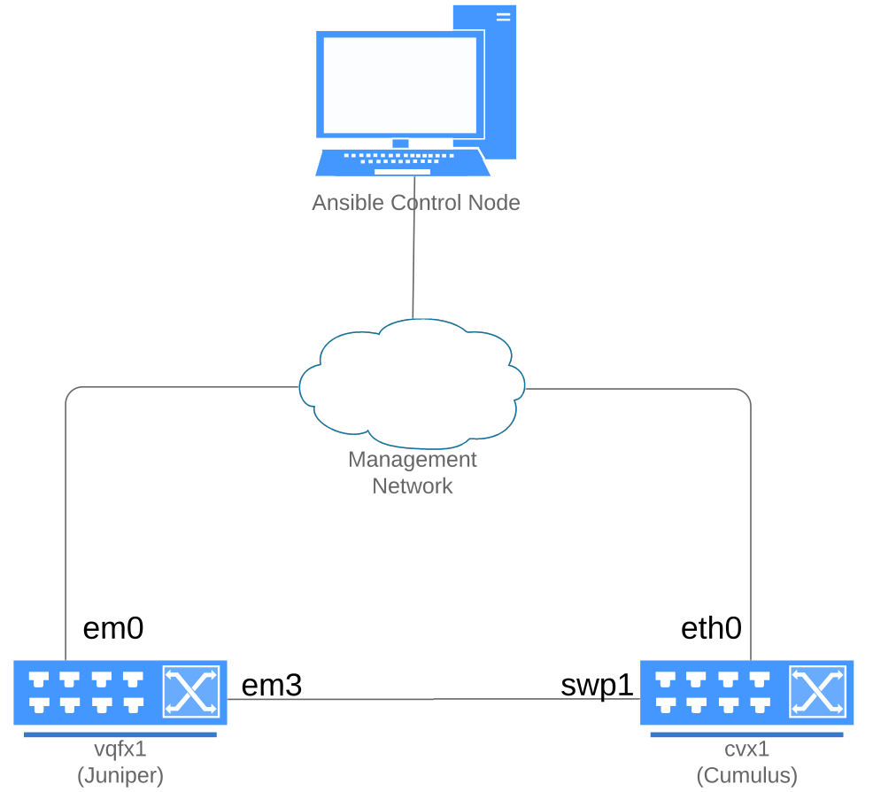

Agnostic network automation examples with Ansible and NRE Labs
Agnostic network automation examples with Ansible and NRE Labs
On February 10th, The NRE Labs project launched four Ansible Network Automation exercises, made possible by Red Hat and Juniper Networks. This blog post covers job responsibilities of an NRE, the goal of NRE Labs, and a quick overview of new exercises and the concepts Red Hat and Juniper are jointly demonstrating. The intended audience for these initial exercises is someone new to Ansible Network Automation with limited experience with Ansible and network automation. The initial network topology for these exercises covers Ansible automating Juniper Junos OS and Cumulus VX virtual network instances.
About NRE Labs
Juniper has defined an NRE or network reliability engineer, as someone that can help an organization with modern network automation. This concept has many different names including DevOps for networks, NetDevOps, or simply just network automation. Juniper and Red Hat realized that this skill set is new to many traditional network engineers and worked together to create online exercises to help folks get started with Ansible Network Automation. Specifically, Juniper worked with us through NRE Labs, a project they started and co-sponsor that offers a no-strings-attached, community-centered initiative to bring the skills of automation within reach for everyone. This works through short, simple exercises within your browser. You can find NRE Labs at the following location: https://nrelabs.io
With Red Hat Ansible Engine 2.9 we introduced the concept of resource modules and native fact gathering, so I wanted to make sure that these exercises covered the latest and greatest aspects of Ansible Network Automation to make this turn key for network engineers. If you are new to resource modules, native fact gathering or even just the Juniper network platform I think it is worth skimming through these exercises!
Lets begin with a network diagram:

Each of the four exercises has a different set of objectives outlined, step-by-step instructions and takeaways for your Ansible knowledge.
This exercise covers what an Ansible INI-based inventory looks like, the Ansible configuration file (ansible.cfg) and running an Ansible Playbook for enabling NETCONF on Juniper Junos. This exercise also illustrates the concept of idempotency and why it is important for network automation.
Exercise 2 - Facts
This exercise covers native fact gathering (using gather_facts: True) and using the debug module. We show how to quickly print serial numbers and version numbers to the terminal window using just three tasks.
Exercise 3 - Resource Facts
This exercise covers more in depth fact gathering using the junos_facts module in conjunction with the new gather_network_resources parameter. This allows the junos_facts module to gather facts from any resource module to read in network configurations and store them as YAML/JSON. This exercise also covers converting these facts into a structured YAML file.
Exercise 4 - Network Configuration Templates
This exercise covers using and understanding host variables, using simple Jinja2 templating, using the junos_config module for Juniper Junos and the template module for Cumulus Linux. The overarching goal of this exercise is using Ansible Network Automation to create an OSPF adjacency between the Cumulus VX device cvx11 and the Juniper Junos device vqfx1.